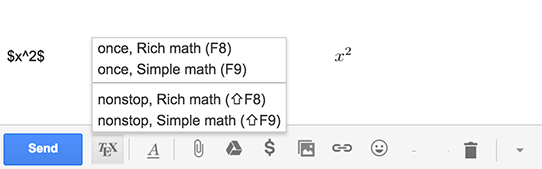
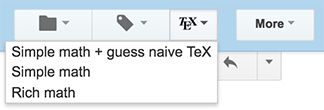
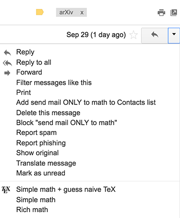

TeX for Gmail (TFG) allows one to use TeX in emails, both for reading and writing. Any formulas enclosed into $...$, \(...\) (for inline math) or \[...\], $$...$$ (for displayed math) will be nicely typeset.
The formulas can be long but they must be unbroken, with no newlines between the $. Also, there shouldn't be any HTML in the formulas (you can use the button Remove Formatting to remove it).
This extension does not collect any information about the users. It replaces mathematical formulas in the outgoing messages by links to images created and controlled by Codecogs https://www.codecogs.com/latex/eqneditor.php and Wordpress https://wordpress.com.
You can click on the TeX button to access a menu, or you can use keyboard shortcuts. You can hide the Compose TeX button in the Options; the shortcuts will still work. 
When you are composing a message, make sure you are NOT in "Plain text mode"!
You can use either the TeX button or (in Gmail only) the drop down "More" menu for the message you are viewing. Both of these can be hidden or revealed in the Options.
 When Rich math is selected, TFG searches for patterns $...$, $$...$$, \(...\), \[...\] and replaces ... with images (as web links) created and hosted by an outside server, Codecogs or WordPress, configurable in the Options.
NOTE: When a server is down new images are temporarily not created. For Codecogs, you can check the current status by going directly to Codecogs.
You can switch the image server in the Options. WordPress is much more reliable than Codecogs, but Codecogs can handle more complicated formulas and environments. The formulas with matrices now automatically use Codecogs since WordPress does not render them.
By default, images are created at the 300% magnification and then downsized. Usually this leads to crisper images but on some displays images may appear fuzzy. You can switch to the 100% magnification in the Options.
When Simple math is selected, TFG searches for patterns $...$, $$...$$, \(...\), \[...\] and replaces ... with HTML, which can handle quite a lot on its own (for example: 'β<sup>2</sup>' gives β2). The resulting formulas do not need any outside image servers and work offline. You can customize the font in Options using any legal CSS, separately for outgoing and incoming messages.
Note: your addressee may not have the fonts that are installed on your computer, such as STIX or Cambria Math, so they may see your message differently. For this reason you may want to stick to font-style:italic for the outgoing messages when using Simple math.
Mathematicians frequently write math in email using intuitive naive TeX, e.g.: x^10, not necessarily following formal TeX rules and without bothering to enclose it into $...$. This option searches for such patterns and tries to typeset them with HTML using a best guess.
TFG knows many common abbreviations such as
You typeset your formula into a nice image and you see that it is a little wrong. How do you go back? Well, you can always use the built-in undo, which is usually Control-Z or Command-Z. You can also click on the image and TFG will offer to change it back into TeX.
\begin{theorem}The equation $x^n+y^n=z^n$ has no solutions in positive integers $x,y,z,n$ with $n\ge3$. \end{}
produces
Note that '\begin{theorem}...\end{}' should not be enclosed in $$...$$. On the other hand, the usual math environments such as matrix, pmatrix, bmatrix, etc. still work in Rich Math mode if they are properly enclosed in $$...$$. There is an optional argument for the theme: red, blue, green, gray, yellow (default). For example, \begin{theorem}{green} ... \end{}.
Do not end a formula with a blank space when using single $'s. For example, $x^2 $ will not TeX. This is done to avoid accidentally texing sentences like Bread is $1 and milk is $2.
If TFG does not seem to be working, try the following steps: